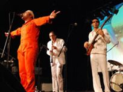

پذيرش > سایت نوشته ها > «ما مرد نيستيم»
 اعتراض موسیقی به جامعه مردسالار ایران اعتراض موسیقی به جامعه مردسالار ایران

 «ما مرد نيستيم» «ما مرد نيستيم»
2 خرداد 1387 - امیر زمانی فر - نسخه قابل چاپ
«ما مرد نيستيم»؛ اين نام تازه ترين آهنگ يک گروه رپ ايرانی در آلمان است. گروهی به نام «تپش ۲۰۱۲». اين گروه از دو سال پيش کار خود را آغاز کرده و به تازگی شاهين نجفی، ترانه سرا و گيتاريست اين گروه به آن ملحق شده است.
اين ترانه از سيزده ارديبهشت ماه امسال روی سايت YouTube قرارگرفته است و تاکنون بيش از ۳۱ هزار بازديد کننده داشته است.
ترانه از جامعه سنتی ايران و از ستمی که در طول ساليان بر زن ايرانی رفته است حکايت می کند.
اميد پور يوسفی، موسس و سرپرست گروه «تپش ۲۰۱۲» به رادیو فردا می گويد: «۲۰۱۲» اشاره به پروژه ای است که همه اعضاء گروه برای رسيدن به آن تلاش می کنند.
وی می گويد:«تپش ۲۰۱۲ يک گروه موسيقی نيست. بلکه سازمان و پروژه ای باز است که ما دو سال است کار روی آن را شروع کرده ايم.»
اميد می افزايد: «هدف ما در اسم اين گروه است. ما دوست داريم در سال ۲۰۱۲ در ايران کنسرت بدهيم. فکر می کنم يکی از معدود گروه های ايرانی باشيم که هدف مان را را در اسم گروه مان گنجانده ايم. اينشتين را مثال می زنم که می گويد: تصور از دانستن مهمتر است. ما اگر تصورش را داشته باشيم شايد بشود.»
اميد پوريوسفی که تا چهارده سالگی در ايران بوده، اکنون سال هاست که در آلمان زندگی می کند. وی می گويد که خود تا حدی جو سنتی و مردسالار ايرانی را تجربه کرده است.
وی پيش از آغاز پروژه تپش ۲۰۱۲ سه بار به ايران سفر کرد.
خود او درباره سفرش به ايران می گويد:«بر خلاف کسان ديگر که برای ديدار خانواده به کشورشان می روند، من با اين هدف رفتم که بروم و ببينم که اصلاً درد کجاست؛ مردم چه می گويند و به خاطر همين هم هر روز در تهران، از اين طرف به آن طرف می رفتم؛ سوار اتوبوس، با اين و آن صحبت می کردم. اين (مشکل) را کاملاً تجربه کردم و حس کردم که اين مشکل ريشه دار است.»
از اميد پور يوسفی درباره تجربه شخصی خود او می پرسم و اينکه آيا تاکنون زندگی در محيطی مردسالار را آزموده است؟
اميد می گويد:«با اينکه اقوام ما که در تهران زندگی می کنند، آدم های مدرن و تحصيل کرده ای هستند، مشاهده کردم که زن، نقش دوم را بازی می کند و اين باعث درد است. در خانواده خودمان هم با اينکه پدر و مادرمان آدم های تحصيل کرده ای هستند، مرد سالاری را کاملاً احساس می کنيم. در دل پدر من [با وجود سال ها زندگی در يک کشور اروپايی]، هميشه يک مرد سالاری وجود دارد و برای مادرم هم بعد از پنجاه، شصت سال هنوز اين مساله قابل هضم نيست.
شاهين نجفی، سراينده شعر ترانه «ما مرد نيستيم» از زاويه ای شاعرانه تر و انسانگرايانه به قضيه نگاه می کند.
وی می گويد: « برای من تجربيات، فقط اتفاقات روزمره زندگی نيست بلکه اتفاقاتی است که در ذهن انسان می افتد. حتی تجربه ای که برای ديگران و انسان های ديگر اتفاق می افتد می تواند بر روند فکری انسان اثر بگذارد. با آن احساسات ارتباط برقرار می کنيم. اتفاق ديگران اتفاق خود ما می شود.»
اميد پور يوسفی می گويد که پس از قرار دادن اين آهنگ بر سايت You Tube بسياری از مردان از شنيدن آن خشمگين شده اند و اين ها را می توان از نظراتی که پای اين آهنگ گذاشته اند نيز دريافت.
اين گفته را با شاهين نجفی ترانه سرای اين آهنگ که دو ماه است به گروه پيوسته در ميان می گذارم.
وی می گويد: «اين مسئله ای ست که متاسفانه وجود دارد و شما اگر چشمتان کج باشد و کسی اين را به شما گوشزد کند ناراحت می شويد.ما وقتی عيب و ايرادی را که داريم کسی بگويد ناراحت می شويم و وقتی اين اتفاق از طرف هم جنس ما، هم طبقه ما و دوست ما انجام می شود، برای ما سنگين تر است.»
شاهين نجفی کار خود را در ايران به عنوان ترانه سرا آغاز کرده است. در نوجوانی به خواندن و نوازندگی گيتار روی آورد. مدتی سرپرست يک گروه موسيقی زيرزمينی در ايران بود و پس از افزايش فشارها به آلمان آمد.
در آلمان مدتی سرپرست گروهی به نام «اينان» بود و اکنون هم خواننده و نوازنده گروه «تپش ۲۰۱۲» است. گروه رپ «تپش ۲۰۱۲» هفت عضو دارد که برخی ايرانی و شماری ديگر نيز از مليت های گوناگون هستند.
از اين گروه، تاکنون دو آلبوم به نام های «ما ايران هستيم» و «از تهران تا برلين» منتشر شده است و آلبوم سوم گروه نيز در راه است.
رادیو فردا
ارسال به
بالاترین
،
توییتر
،
فریندفید
،
فیسبوک
در همين بخش :
 یک خبر تلخ؟ یک قانونشکنی؟ یک تصمیم بخشنامهای جدید؟ یک خبر تلخ؟ یک قانونشکنی؟ یک تصمیم بخشنامهای جدید؟
چرا بایست به سکسوالیته پرداخت؟ / نفیسه آزاد
آزارجنسی خانگی؛ «قربانی» نه، «نجات یافته»
زنان، بزرگترین بازندگان بهار عرب
سانسور از دیدگاه جنسیتی/الهه امانی
ديگر بخش ها :
طرح یک میلیون امضا
|
مقالات
|
سایت نوشته ها
|
اخبار
|
گزارش كمپين
|
گفت و گو
|
علیه سکوت
|
كوچه به كوچه
|
نامه های شما
|
گزارش ویژه
|
گفتگو با اعضا
|
ویژه سالگرد کمپین
|
تصویر برابری
|
دل آرام علی
|
تریبون
|
مقالات
|
تاریخ شفاهی
|
خارج از چارچوب
|
کتابخانه
|
درباره کمپین
|
کمپین در شهرها
|
کمپین در بند
|
صدای تغییر
|
ویژه 22 خرداد
|
لایحه حمایت از خانواده
|
گالری
|
عشا مومنی
|
امیر یعقوبعلی
|
خدیجه مقدم
|
راحله عسگری زاده و نسیم خسروی
|
پروین اردلان،جلوه جواهری، مریم حسین خواه، ناهید کشاورز
|
زینب پیغمبرزاده
|
سعیده امین، سارا ایمانیان، محبوبه حسین زاده، ناهید کشاورز و همایون نامی
|
احترام شادفر
|
نسیم سرابندی زاده،فاطمه دهدشتی
|
وبلاگ مهمان
|
پرونده خرم آباد
|
دستگیری ها
|
مریم مالک
|
پرستو اللهیاری
|
مهرنوش اعتمادی
|
سمیه رشیدی
|
Other Languages
|
همراهان
|
«فراخوان کمپین ده روز با بهاره هدایت»
| English
|